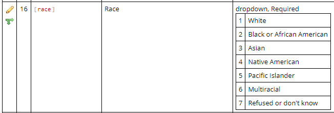

vignettes/workflow-write.Rmd
workflow-write.RmdWriting data to REDCap is more difficult than reading data from REDCap. When you read, you receive data in the structure that the REDCap provides you. You have some control about the columns, rows, and data types, but there is not a lot you have to be concerned.
In contrast, the structure of the dataset you send to the REDCap server must be precise. You need to pass special variables so that the REDCap server understands the hierarchical structure of the data points. This vignette walks you through that process.
If you are new to REDCap and its API, please first understand the concepts described in these two vignettes:
As described in the Retrieving Longitudinal and Repeating Structures vignette, the best way to read and write data from projects with longitudinal/repeating elements is to break up the “block matrix” dataset into individual datasets. Each rectangle should have a coherent grain.
Following this strategy, we’ll write to the REDCap server in two distinct steps:
The actual upload phase is pretty straight-forward –it’s just a call
to REDCapR::redcap_write(). Most of the vignette’s code
prepares the dataset so that the upload will run smoothly.
See the Typical REDCap Workflow for a Data Analyst vignette and
Please closely read the Retrieve Protected Token section, which has important security implications. The current vignette imports a fake dataset into REDCap, and we’ll use a token stored in a local file.
# retrieve-credential
path_credential <- system.file("misc/example.credentials", package = "REDCapR")
credential <- REDCapR::retrieve_credential_local(
path_credential = path_credential,
project_id = 3748
)
c(credential$redcap_uri, credential$token)To keep this vignette focused on writing/importing/uploading to the server, we’ll start with the data that needs to be written. These example tables were prepared by Raymond Balise for our 2023 R/Medicine workshop, “Using REDCap and R to Rapidly Produce Biomedical Publications”.
There are two tables, each with a different granularity:
ds_patient: each row represents one patient,ds_daily: each row represents one daily measurement per
patient.
# load-patient
ds_patient <-
"test-data/vignette-repeating-write/data-patient.rds" |>
system.file(package = "REDCapR") |>
readr::read_rds()
ds_patient
# load-repeating
ds_daily <-
"test-data/vignette-repeating-write/data-daily.rds" |>
system.file(package = "REDCapR") |>
readr::read_rds()
ds_dailyBesides the data.frame
to write to REDCap, the only required arguments of the REDCapR::redcap_write()
function are redcap_uri and token; both are
contained in the credential object created in the previous section.
As discussed in the Troubleshooting vignette, we recommend running these two preliminary checks before trying to write the dataset to the server for the very first time.
If the REDCap project isn’t longitudinal and doesn’t have arms,
uploading a patient-level data.frame to REDCap doesn’t require adding
variables. However we typically populate the *_complete
variables to communicate the record’s status.
If the row is needs a human to add more values or inspect the existing values consider marking the instrument “incomplete” or “unverified”; the patient’s instrument record will appear red or yellow in REDCap’s Record Dashboard. Otherwise consider marking the instrument “complete” so it will appear green.
With this example project, the only patient-level instrument is
“enrollment”, so the corresponding variable is
enrollment_complete.
REDCapR::validate_for_write()
REDCapR::validate_for_write() inspects a data frame to
anticipate potential problems before writing with REDCap’s API. A tibble
is returned, with one row per potential problem (and a suggestion how to
avoid it). Ideally an 0-row tibble is returned.
REDCapR::validate_for_write(ds_patient, convert_logical_to_integer = TRUE)If you encounter problems that can be checked with automation, please
tell us in an
issue. We’ll work with you to incorporate the new check into
REDCapR::validate_for_write().
When a dataset’s problems are caught before reaching the server, the solutions are easier to identify and implement.
If this is your first time with a complicated project, consider loading a small subset of rows and columns. In this case, we start with only three columns and two rows.
# patient-subset
ds_patient |>
dplyr::select( # First three columns
id_code,
date,
is_mobile,
) |>
dplyr::slice(1:2) |> # First two rows
REDCapR::redcap_write(
ds_to_write = _,
redcap_uri = credential$redcap_uri,
token = credential$token,
convert_logical_to_integer = TRUE
)Some variables in the data.frame might be represented differently than in REDCap.
A common transformation is changing strings into the integers that
underlie radio buttons. Common approaches are dplyr::case_match()
and using joining to lookup tables (if the mappings are expressed in a
csv). Here’s an in-line example of dplyr::case_match().
ds_patient <-
ds_patient |>
dplyr::mutate(
race =
dplyr::case_match(
race,
"White" ~ 1L,
"Black or African American" ~ 2L,
"Asian" ~ 3L,
"Native American" ~ 4L,
"Pacific Islander" ~ 5L,
"Multiracial" ~ 6L,
"Refused or don't know" ~ 7L
)
)
If the small subset works, we usually jump ahead and try all columns and rows.
If this larger table fails, split the difference between (a) the smaller working example and (b) the larger failing example. See if this middle point (that has fewer rows and/or columns than the failing point) succeeds or fails. Then repeat. This “bisection” or “binary search” debugging technique is helpful in many areas of programming and statistical modeling.
# patient-entire
ds_patient |>
REDCapR::redcap_write(
ds_to_write = _,
redcap_uri = credential$redcap_uri,
token = credential$token,
convert_logical_to_integer = TRUE
)As stated in the vignette’s intro, the structure of the dataset uploaded to the server must be precise. When uploading repeating instruments, there are several important columns:
record_id: typically indicates the patient’s id. (This
field can be renamed for the project.)redcap_event_name: If the project is longitudinal or
has arms, this indicates the event. Otherwise, you don’t need to add
this variable.redcap_repeat_instrument: Indicates the instrument/form
that is repeating for these columns.redcap_repeat_instance: Typically a sequential positive
integer (e.g., 1, 2, 3, …) indicating the order.The combination of these variables needs to be unique. Please read the Retrieving Longitudinal and Repeating Structures vignette for details of these variables and their meanings.
You need to pass specific variables so that the REDCap server understands the hierarchical structure of the data points.
# repeat-plumbing
ds_daily <-
ds_daily |>
dplyr::group_by(id_code) |>
dplyr::mutate(
redcap_repeat_instrument = "daily",
redcap_repeat_instance = dplyr::row_number(da_date),
daily_complete = REDCapR::constant("form_complete"),
) |>
dplyr::ungroup() |>
dplyr::select(
id_code, # Or `record_id`, if you didn't rename it
# redcap_event_name, # If the project is longitudinal or has arms
redcap_repeat_instrument, # The name of the repeating instrument/form
redcap_repeat_instance, # The sequence of the repeating instrument
tidyselect::everything(), # All columns not explicitly passed to `dplyr::select()`
daily_complete, # Indicates incomplete, unverified, or complete
)
# Check for potential problems. (Remember zero rows are good.)
REDCapR::validate_for_write(ds_daily, convert_logical_to_integer = TRUE)
ds_daily
# daily-entire
ds_daily |>
REDCapR::redcap_write(
ds_to_write = _,
redcap_uri = credential$redcap_uri,
token = credential$token,
convert_logical_to_integer = TRUE
)This vignette required only two data.frames, but more complex projects sometimes need more. For example, each repeating instrument should be its own data.frame and writing step. Arms and longitudinal events need to be considered too.
By default, REDCapR::redcap_write() requests datasets of
100 patients as a time, and stacks the resulting subsets together before
returning a data.frame. This can be adjusted to improve performance; the
‘Details’ section of REDCapR::redcap_write() discusses the
trade offs.
I usually shoot for ~10 seconds per batch.
Manual downloading/uploading might make sense if you’re do the operation only once. But when does it ever stop after the first time?
If you have trouble uploading, consider adding a few fake patients & measurements and then download the csv. It might reveal something you didn’t anticipate. But be aware that it will be in the block matrix format (i.e., everything jammed into one rectangle.)
This vignette was originally designed for the 2023 R/Medicine workshop, Using REDCap and R to Rapidly Produce Biomedical Publications Cleaning Medical Data with Raymond R. Balise, Belén Hervera, Daniel Maya, Anna Calderon, Tyler Bartholomew, Stephan Kadauke, and João Pedro Carmezim Correia. The entire workshop’s slides are at https://github.com/RaymondBalise/r_med_redcap_2023_public.
This work was made possible in part by the NIH grant U54GM104938 to the Oklahoma Shared Clinical and Translational Resource).
For the sake of documentation and reproducibility, the current report was rendered in the following environment. Click the line below to expand.
#> ─ Session info ───────────────────────────────────────────────────────────────
#> setting value
#> version R version 4.3.1 (2023-06-16)
#> os macOS Monterey 12.6.7
#> system x86_64, darwin20
#> ui X11
#> language en
#> collate en_US.UTF-8
#> ctype en_US.UTF-8
#> tz UTC
#> date 2023-07-14
#> pandoc 2.19.2 @ /usr/local/bin/ (via rmarkdown)
#>
#> ─ Packages ───────────────────────────────────────────────────────────────────
#> package * version date (UTC) lib source
#> bslib 0.5.0 2023-06-09 [1] CRAN (R 4.3.0)
#> cachem 1.0.8 2023-05-01 [1] CRAN (R 4.3.0)
#> cli 3.6.1 2023-03-23 [1] CRAN (R 4.3.0)
#> desc 1.4.2 2022-09-08 [1] CRAN (R 4.3.0)
#> digest 0.6.33 2023-07-07 [1] CRAN (R 4.3.0)
#> evaluate 0.21 2023-05-05 [1] CRAN (R 4.3.0)
#> fastmap 1.1.1 2023-02-24 [1] CRAN (R 4.3.0)
#> fs 1.6.2 2023-04-25 [1] CRAN (R 4.3.0)
#> glue 1.6.2 2022-02-24 [1] CRAN (R 4.3.0)
#> highr 0.10 2022-12-22 [1] CRAN (R 4.3.0)
#> htmltools 0.5.5 2023-03-23 [1] CRAN (R 4.3.0)
#> jquerylib 0.1.4 2021-04-26 [1] CRAN (R 4.3.0)
#> jsonlite 1.8.7 2023-06-29 [1] CRAN (R 4.3.0)
#> knitr 1.43 2023-05-25 [1] CRAN (R 4.3.0)
#> lifecycle 1.0.3 2022-10-07 [1] CRAN (R 4.3.0)
#> magrittr 2.0.3 2022-03-30 [1] CRAN (R 4.3.0)
#> memoise 2.0.1 2021-11-26 [1] CRAN (R 4.3.0)
#> pkgdown 2.0.7 2022-12-14 [1] CRAN (R 4.3.0)
#> purrr 1.0.1 2023-01-10 [1] CRAN (R 4.3.0)
#> R6 2.5.1 2021-08-19 [1] CRAN (R 4.3.0)
#> ragg 1.2.5 2023-01-12 [1] CRAN (R 4.3.0)
#> rlang 1.1.1 2023-04-28 [1] CRAN (R 4.3.0)
#> rmarkdown 2.23 2023-07-01 [1] CRAN (R 4.3.0)
#> rprojroot 2.0.3 2022-04-02 [1] CRAN (R 4.3.0)
#> sass 0.4.6 2023-05-03 [1] CRAN (R 4.3.0)
#> sessioninfo 1.2.2 2021-12-06 [1] CRAN (R 4.3.0)
#> stringi 1.7.12 2023-01-11 [1] CRAN (R 4.3.0)
#> stringr 1.5.0 2022-12-02 [1] CRAN (R 4.3.0)
#> systemfonts 1.0.4 2022-02-11 [1] CRAN (R 4.3.0)
#> textshaping 0.3.6 2021-10-13 [1] CRAN (R 4.3.0)
#> vctrs 0.6.3 2023-06-14 [1] CRAN (R 4.3.0)
#> xfun 0.39 2023-04-20 [1] CRAN (R 4.3.0)
#> yaml 2.3.7 2023-01-23 [1] CRAN (R 4.3.0)
#>
#> [1] /Users/runner/work/_temp/Library
#> [2] /Library/Frameworks/R.framework/Versions/4.3-x86_64/Resources/library
#>
#> ──────────────────────────────────────────────────────────────────────────────